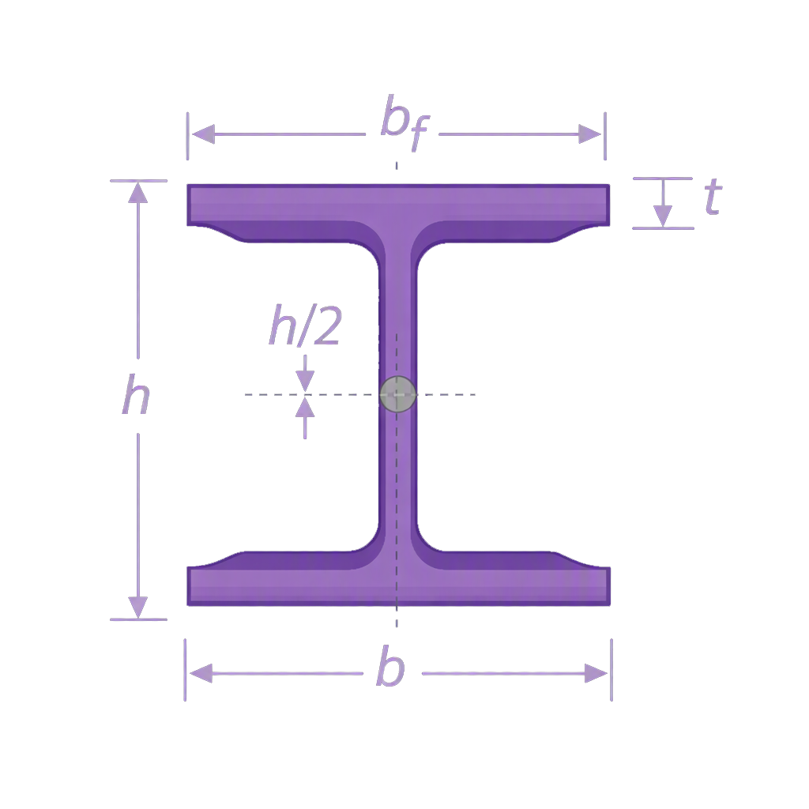
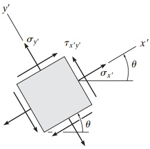
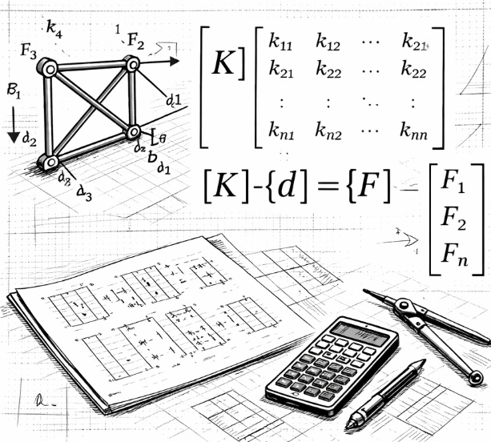

Aquí podrás realizar cálculos matemáticos relacionados con la ingeniería estructural de manera fácil y rápida.

Ingresa las dimensiones de la viga para obtener sus propiedades geométricas, como el momento de inercia, que son esenciales para el análisis estructural y el diseño de la viga.

Calcula los esfuerzos planos en una estructura y evalúa su resistencia.

Realiza cálculos relacionados con el análisis estructural mediante el método de rigidez.